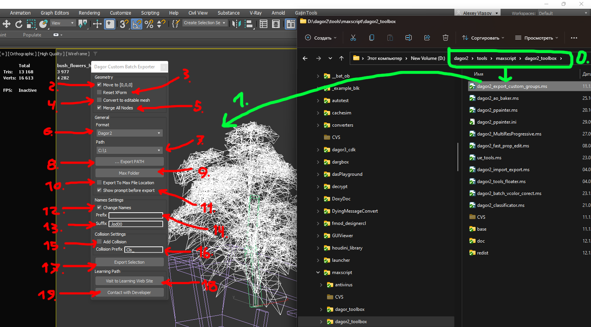

Dagor 2 Custom Groups Export Tool
Installation
The Dagor 2 Custom Groups Export Tool is a specialized script designed to
prepare scenes for export, automating the process of saving multiple groups of
objects with predefined properties into the .dag format. This script is not
included in the Dagor Tool set, as it is tailored for a specific mode of
object export.
To install the script, simply drag and drop the dagor2_export_custom_groups.ms
file located at .../dagor2_toolbox/base (0) into the active Viewport of
3ds Max (1) (green marks on the picture below). This action will open the
Dagor Custom Batch Exporter script window.
Important
This script requires 3ds Max 2013 or a newer version.
Ensure that Dagor Plugins are installed before using this script.

Using the Custom Groups Export Tool
The script provides several configurable settings:
Move to [0,0,0] (2): Moves selected objects to the coordinate center before export. After export, objects are returned to their original positions.
Reset XForm (3): Automatically resets the XForm on selected objects before export.
Convert to Editable Mesh (4): Converts selected objects to Editable Mesh before export.
Merge All Nodes (5): Merges all selected objects within groups into a single object and assigns the group name to this new object. If enabled, the log will only display a general summary for the group. If disabled, the log will detail which specific objects have degenerate triangles.
Note
These settings only apply during export. Once the export is complete, the scene will revert to its previous state.
Export Settings
Format (6): Select the export format. The script is designed exclusively for the Dagor Engine, so only the
.dagformat is available.Path (7): Displays previously saved export paths. These paths are automatically added when you select an export path using button … Export Path (8).
If checkbox Export to Max File Location (10) is enabled, list (7) and button (8) become unavailable. This option allows you to export to the directory where the current
.maxscene is saved.Clicking button Max Folder (9) opens the directory containing the current
.maxscene in Windows Explorer.Show prompt before export (11): Enables the display of logs after export. Any errors or warnings encountered during export will be shown.
Naming Conventions
Change Names (12): Enables the addition of prefixes and suffixes to the names of exported objects. You can specify the prefix and suffix in text fields (14) and (13), respectively. For example, if the object name is
OBJ_01, by default, only the suffix.lod00will be applied, resulting in the final file nameOBJ_01.lod00.dag.
Collision Settings
Collision Settings block allows you to export collision objects based on a prefix specified in text field (16). To enable this function, check checkbox (15). The script will search for collision objects in the scene that match the prefix (default:
Cls_) specified in field (16). If found, these objects will be included in the export. Otherwise, they will be exported as normal objects.
Additional Controls
Export Selection (17): Initiates the export process. Ensure that at least one object with triangles is selected in the scene before proceeding.
Visit to Learning Web Site (18): Opens a browser window with this documentation.
Contact with Developer (19): Displays the contact information for the script developer.